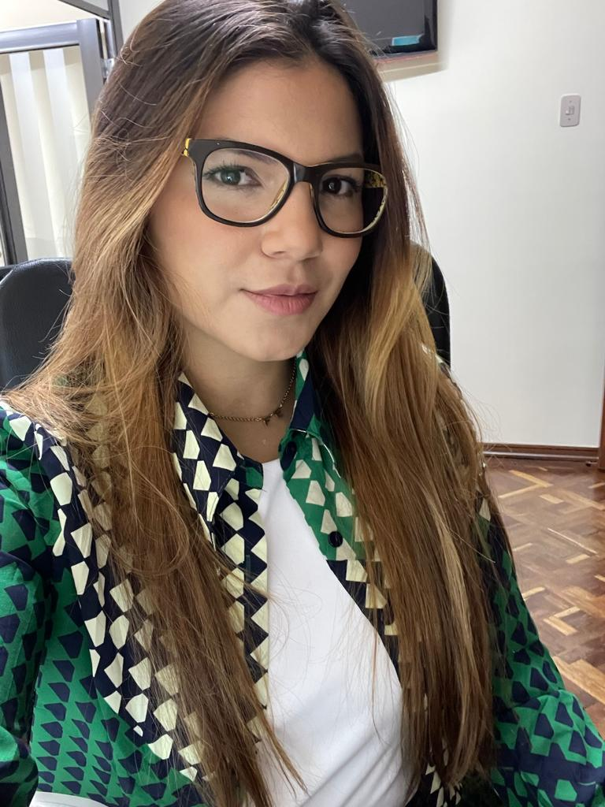

CURRICULUM VITAE DE NORLYS CASTAÑEDA
DATOS PERSONALES
- Nombre completo:Norlys Aurimer Castañeda hernandez
- Fecha de nacimiento:30/12/1990
- Lugar de nacimiento:Venezuela-Monagas>
FORMACION ACADEMICA BACHILLERATO
- 2001-2004:
- Liceo Ramón Pompilio Oropeza 1er año y 3er año
- 2005:
- Liceo Francisco de Miranda 4to año
- 2005:
- Liceo Julio Bustamante 5to año Mencion Ciencias
- 2006:
- Instituto Univercitario Jeus Enrrique lozada
- T.S.U Administracion Mencion Seguros Mercantiles-2016
- Universidad delk Valle del Momboy- Venezuela-Virtual
- Ing. de Computacion 1er semestre-2023
- Digital house
- Certified Tech Developer
EXPERIENCIA LABORAL
- 2009-2014-Venezuela-Caracas
- Seguros Canarias
- 2014-2015-Venezuela-Caracas
- Seguros la internacional
- 2016-2016-Venezuela-San Cristobal
- Seguros lo Andes-Pasantias Universitaria
- 2019 Aycardi Ingenieros-Colombia
- Coordinadora de Proyectos
- 2022-2003 Netcom-Colombia:
- Asistente de Gerencia
- 2023 Netcom-Colombia:
- Analista de Calidad-QA
SOFT SKILLS
- Trabajo en equipo
- Organizativa
- Comunicativa
- Creativa
- Lider